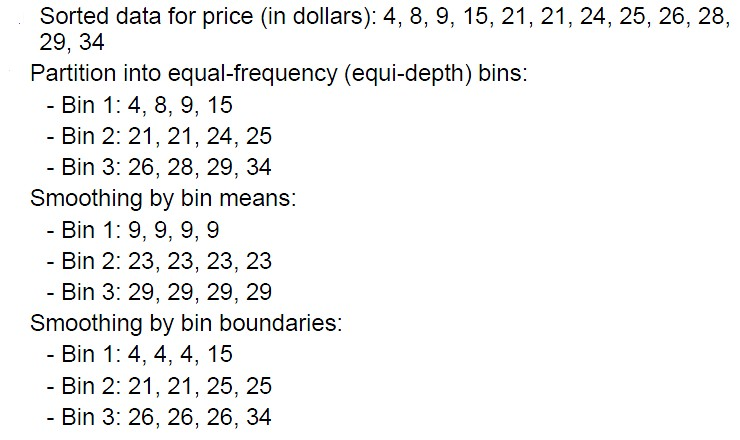
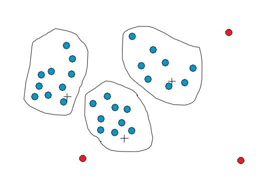
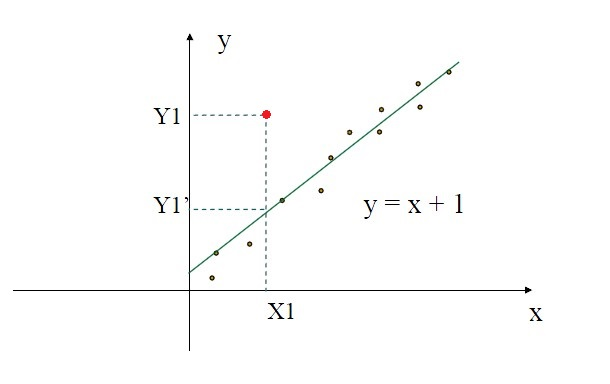

数据挖掘入门(3)
数据仓库的存在，给数据分析提供了很大的便利。但是，数据仓库只是一个存放数据的地方，具体放什么数据还是我们说了算。很显然，我们应该把一些与分析相关的数据放进去。是不是直接把这些数据放进去就可以了呢？
答案是否定的。谁能保证我们所谓的这些相关数据没有冲突、没有冗余、没有错误？现实情况更糟糕，我们的数据源常常是非常“Dirty”的，有各种各样的问题。“林子大了什么鸟都有”，所以，数据多了也会有各种各样的问题。
我们希望把高质量的数据存入到数据仓库，这样分析出来的结果才能更靠谱。
如何把普通的数据源变成高质量的数据？这就需要数据预处理。
数据预处理（Preprocessing）
数据预处理就是预先对数据进行处理，为后续的存储、分析做准备。现在的问题是如何处理呢？
数据预处理需要完成的五项主要任务：
- 数据清理（Data cleaning）
- 数据集成（Data integration）
- 数据变换（Data transformation）
- 数据归约（Data reducing）
- 数据离散化（Data discretization）
数据清理
数据源中的数据可能会有这些问题：某些字段为空值，含有噪声数据（如输入不正确的值）。
我们如何处理空值呢？
- 忽略掉有空值的记录（这样做不太合适，如果很多记录都有空值呢）
- 雇人去填写空值（耗费太多人力了）
- 使用UNKNOWN等全局标识代替空值（一些算法不识别这样的符号）
- 使用该属性的平均值填写空值（还凑合吧）
- 使用当前记录所属类的平均值填写空值（更好些）
- 使用贝叶斯、判定树来推断空值（计算有些复杂）
我们如何处理噪声呢？
- 使用分箱（Bining）方法，按照箱的平均值、中值、边界平滑数据
- 使用聚类方法，删除聚类以后孤立的点
- 计算机与人工检查相结合
- 使用回归函数来平滑数据
分箱示例如下图。

聚类示例如下，红色代表孤立点，即噪声数据。

回归方法示例如下，红色的表示噪声，可以用回归函数平滑。

数据集成
我们需要把各种数据源的数据整合到一起，可能会遇到这样的问题：多个数据源对同一事情的描述不一致（可能是单位不同，也可能是数值不同）、同一个字段在各个数据源中的名称不同（如studentnum和stuid）、有冗余的数据、元数据不同。
其中，数据冗余可以使用相关分析来检测：
$$r_{A,b} = \frac{\sum (A-\bar{A})(B-\bar{B})}{(n-1)\sigma_A \sigma_B}$$
数据变换
数据变换是指用另一种形式的数据来代替现在的形式。为什么要变换，肯定是变换后的形式比现在的要好，方便分析，要不然干嘛要变换呀。
数据清理过程中去噪声的过程（分箱、聚类、回归）是一种数据平滑的过程。平滑就是一种数据变换。
数据变换还包括：聚集（数据立方体构建）、数据概化（沿概念分层向上构建）、规范化（把数据按比例缩放到小的区间）、属性构造（用新的属性代替现有的属性）。都是用一种新的形式代替当前的形式，方便分析和理解。
其中，数据规范化主要包括最小最大规范化、z-score规范化、小数定标规范化。
最小最大规范化，把v映射到new_minA和new_maxA之间：
$$v_{new} = \frac{v - min_A}{max_A - min_A}(new\_max_A+new\_min_A)+new\_min_A$$
z-score规范化，其中$\mu_A$为均值，$\sigma_A$为方差：
$$v_{new} = \frac{v-\mu_A}{\sigma_A}$$
小数定标规范化：
$v_{new} = \frac{v}{10^j}$，其中j是使得$max(|v_{new}|) < 1$成立的最小整数。
数据变换是将数据按照比例缩放，使之能够落入一个小的区间。
数据规约
规约的意思就是变少变小。为什么要变少？因为数据量太大了，少一点会好分析写。当然，我们必须要保证规约所花费的时间要小于分析的时间。
如何规约？对什么规约？
- 数据立方体聚集（在不同级别对数据立方体汇总，方体变小了）
- 维规约（删除不相关的属性或维，维数变少了）
- 数据压缩（数据变少了）
- 数值规约（使用函数代替数据点或者使用直方图、聚类、选样等方式，数据变少了）
- 数据离散化（把属性划分到区间里，用区间代替属性，属性变少）
- 概念分层（使用高层概念代替低层概念，属性变少）
所以，数据规约是一种化繁为简的方式。这样做可能会丢失信息的细节，但并不一定会有不好的结果。因为我们从抽象的概念中得到的启发要远远大于一堆数据，因为数据不够直观。而且，数据规约一般会带来分析速度的提高。
-- EOF --